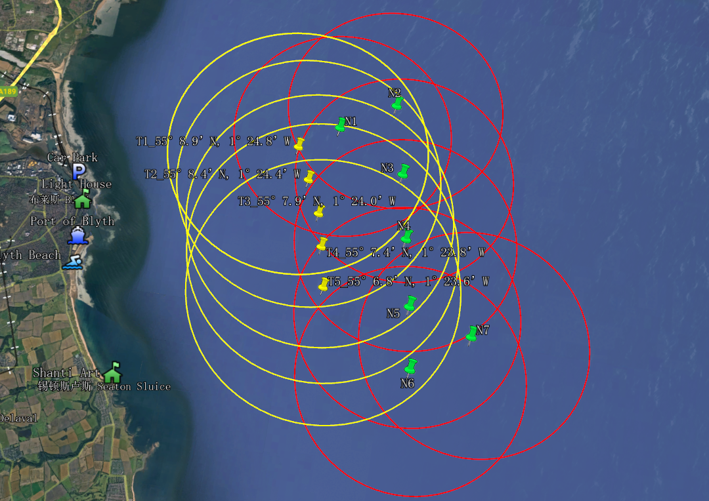
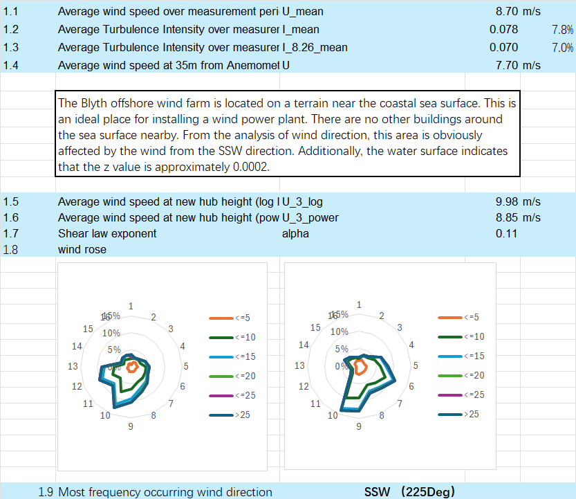
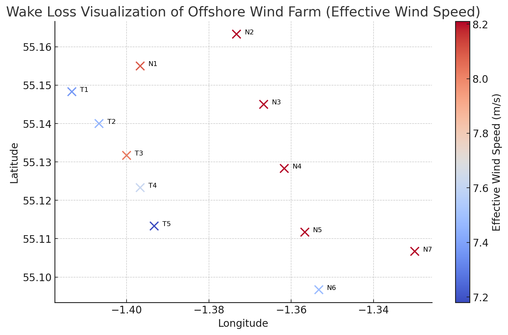
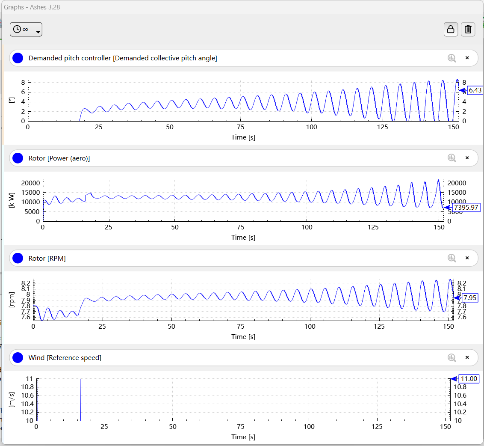
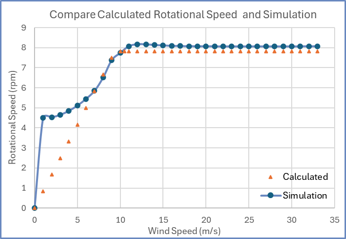
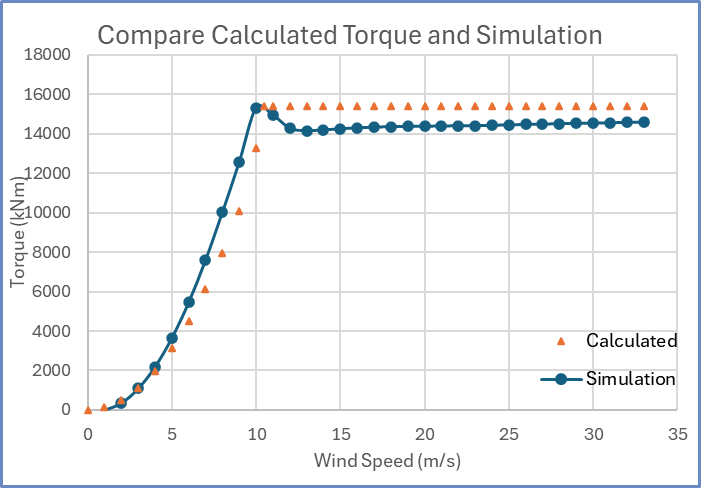
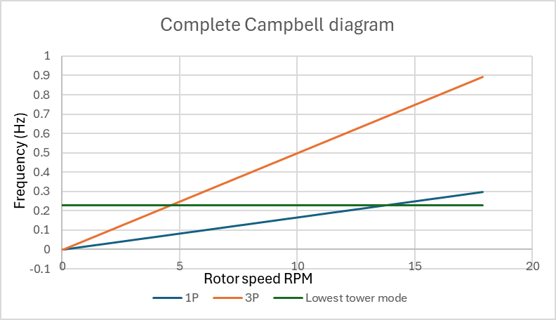
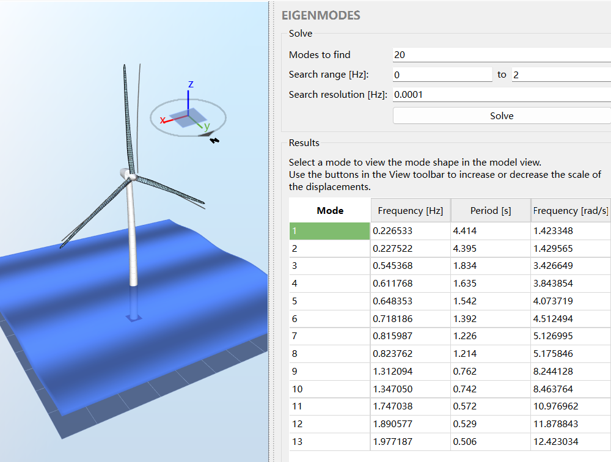

84 MW新增风电容量new wind capacity
7 x 12 MW扩建布置方案extension layout
8.69 m/s长期平均风速long-term mean wind
8.21 m/sP90 年平均风速P90 annual wind
Cp 0.498ASHE 峰值功率系数ASHE peak coefficient
TSR 9.6设计叶尖速比design tip-speed ratio
0.227 Hz一阶塔架模态first tower mode
33.22 kV发电机开路电压generator open-circuit EMF
项目概览（STAR）Project Overview (STAR)
- Situation
- 既有 Blyth Offshore Demonstrator Wind Farm 已建成 5 台 8.3MW 风机，课程任务要求在近海场址提出新增 75MW 以上的扩建方案，并进一步设计一台适用于该场址的 12MW 级近海风机。 The existing Blyth Offshore Demonstrator Wind Farm has five 8.3MW turbines. The coursework required a >75MW offshore extension and a 12MW-class turbine design suitable for the site.
- Task
- Project 1 需要提交可复核的风资源、测量-相关-预测法（Measure-Correlate-Predict, MCP）、选址、噪声、遮影和尾流计算；Project 2 需要提交 ASHE 项目文件、带注释 Excel 工作簿和展示材料，证明风机气动、控制、结构和电气设计的完整性。 Project 1 required auditable wind-resource, MCP, siting, noise, shadow and wake calculations. Project 2 required an ASHE model, annotated workbook and presentation proving the turbine's aerodynamic, control, structural and electrical design logic.
- Action
- 我先用多站点气象数据完成长期风速修正和 P90 风资源评估，提出 7 台 12MW 风机的 84MW 扩建布局，并用高斯尾流模型量化代表性尾流损失；随后在 ASHE 中将参考风机缩放到 12MW，建立叶片、塔架、单桩基础、变速变桨控制和直驱永磁发电机模型。 I first used multi-station meteorological data to estimate long-term and P90 wind speed, proposed a seven-turbine 84MW extension, and quantified representative wake loss with a Gaussian wake model. I then scaled a reference turbine to 12MW in ASHE and modelled the blade, tower, monopile foundation, variable-speed pitch controller and direct-drive PMG.
- Result
- 最终方案将场址层面的风资源、布局和尾流判断，与设备层面的 12MW 风机模型连接起来：长期平均风速约 8.69m/s，P90 年平均风速约 8.21m/s，代表性尾流损失约 8.94%；ASHE 模型获得 Cpmax 0.498、设计叶尖速比 9.6、一阶塔架模态约 0.227Hz，并完成 154 极对、33.22kV 开路电压的直驱永磁发电机估算。 The final work connected site-level wind resource, layout and wake judgement with equipment-level 12MW turbine modelling: long-term mean wind speed about 8.69m/s, P90 annual wind speed about 8.21m/s, representative wake loss about 8.94%, ASHE Cpmax 0.498, design TSR 9.6, first tower mode about 0.227Hz, and a direct-drive PMG estimate with 154 pole pairs and 33.22kV open-circuit EMF.
Project 1：风资源评估逻辑Project 1: Wind Resource Logic
- Blyth 测量期平均风速约 8.70m/s，平均湍流强度约 7.8%；在 8.26m/s 风速区间，湍流强度约 7.0%，可作为 IEC 61400-1 Class I.C 风况判断的课程级依据。The Blyth measurement-period mean wind speed was about 8.70m/s and average turbulence intensity about 7.8%; around the 8.26m/s bin, turbulence intensity was about 7.0%, supporting a coursework-level IEC 61400-1 Class I.C judgement.
- MCP 部分比较 Albemarle、Boulmer、Charterhall、Gogarbank、Leuchars 和 Redesdale Camp 等参考气象站。Boulmer 与 Blyth 的日均风速相关性最高，线性相关系数 R²=0.874，因此被选为长期修正参考站。The MCP step compared Albemarle, Boulmer, Charterhall, Gogarbank, Leuchars and Redesdale Camp. Boulmer had the strongest daily-average wind-speed correlation with Blyth, with R²=0.874, so it was selected as the long-term reference station.
- 风切变同时采用对数律和幂律交叉检查。项目后续采用更保守的长期平均风速和 P90 风速，而不是只用测量期高值直接推导收益，以降低短期样本带来的乐观偏差。Wind shear was checked with both logarithmic-law and power-law methods. Later calculations used conservative long-term and P90 wind speeds instead of directly monetising short-term high measurements, reducing optimistic bias from limited samples.
- 概率分布部分使用瑞利分布（Rayleigh Distribution）和威布尔分布（Weibull Distribution）拟合风速频率，得到 P90 年平均风速约 8.21m/s，用于表达保守年景下仍可达到的风资源水平。The probability-distribution step fitted Rayleigh and Weibull distributions to wind-speed frequency, giving a P90 annual wind speed of about 8.21m/s to express a conservative-year resource level.
Project 1：选址、机型和尾流Project 1: Siting, Turbine and Wake
- 扩建目标超过 75MW，候选机型为 12MW 级近海风机。7 台风机合计 84MW，可以满足容量要求，同时减少海上基础、阵列电缆和运维对象数量。The extension target was above 75MW and the candidate turbine was a 12MW-class offshore unit. Seven turbines give 84MW, meeting the capacity target while limiting the number of foundations, array-cable connections and offshore maintenance assets.
- 场址筛选同时检查既有 T1-T5 与新增 N1-N7 的相对位置、5D-7D 间距、主导风向 225°（SSW）下的前后排遮挡、沿岸居民点距离、海图可用水域、噪声和遮影风险。Site screening checked the relative positions of existing T1-T5 and proposed N1-N7 turbines, 5D-7D spacing, upstream-downstream overlap under the 225 degree SSW prevailing wind direction, coastal receptors, available chart area, noise and shadow-flicker risk.
- 代表性尾流工况采用自由来流风速 U0=8.21m/s、尾流扩张系数 k=0.05、推力系数 CT=0.80。经纬度先转换为平面坐标，再旋转坐标系，使来流方向与下游方向一致。The representative wake case used free-stream speed U0=8.21m/s, wake expansion coefficient k=0.05 and thrust coefficient CT=0.80. Latitude and longitude were converted to planar coordinates, then rotated so the inflow direction aligned with the downstream axis.
- 该工况下无尾流总功率约 61.19MW，有尾流总功率约 55.72MW，损失约 5.47MW，即 8.94%。该数值适合用于布局筛选；正式年发电量仍需要多风向、多风速频率加权模型。Under this case, no-wake total power was about 61.19MW and wake-adjusted total power about 55.72MW, giving a 5.47MW or 8.94% loss. This is useful for layout screening; bankable annual energy would still need multi-direction, multi-speed frequency weighting.
Project 2：ASHE 12MW 风机模型Project 2: ASHE 12MW Turbine Model
- ASHE 模型将参考 15MW 和 5MW 风机缩放到 12MW：转子半径 110m，叶片长度约 106.64m，轮毂高度 170.74m，3 叶片，单桩基础桩尖至 LAT（Lowest Astronomical Tide，最低天文潮位）以下约 20m。The ASHE model scaled reference 15MW and 5MW turbines to 12MW: rotor radius 110m, blade length about 106.64m, hub height 170.74m, three blades, and a monopile foundation with pile tip about 20m below LAT.
- 气动部分使用叶素动量理论（Blade Element Momentum, BEM）计算 Cp-λ 与 Ct-λ 曲线。模型在叶尖速比（Tip-Speed Ratio, TSR）9.6 附近达到 Cpmax=0.498，推力系数 CT 约 0.853，作为额定前控制和功率曲线设计的关键点。The aerodynamic section used Blade Element Momentum theory to calculate Cp-lambda and Ct-lambda curves. The model reached Cpmax=0.498 around TSR 9.6, with CT about 0.853, forming the key design point for below-rated control and power-curve definition.
- 变桨研究覆盖 -6°、-4°、-2°、0°、+2°、+4°、+6°。正向顺桨会降低 Cp 和 CT，用于额定风速以上削减气动功率和载荷；负向变桨能提升低风速捕能，但会增加载荷风险。The pitch study covered -6, -4, -2, 0, +2, +4 and +6 degrees. Positive feathering reduces Cp and CT for above-rated power and load shedding; negative pitch can improve low-speed capture but increases load risk.
- 控制器采用变速变桨思路。课程计算给出 Ku=3.3s、Tu=10.1s，初始比例增益 Kp=1.485、积分增益 Ki=0.176、调度角 θk=25°，用于在额定附近稳定功率、转速和桨距响应。The controller followed a variable-speed pitch-control logic. Coursework tuning gave Ku=3.3s, Tu=10.1s, initial proportional gain Kp=1.485, integral gain Ki=0.176 and scheduling angle theta_k=25 degrees to regulate power, speed and pitch around rated operation.
Project 2：结构动力学、载荷与发电机Project 2: Structural Dynamics, Loads and Generator
- 结构模态分析得到 13 个主要模态。一阶和二阶塔架相关模态约 0.2266Hz 与 0.2276Hz。在 10rpm 左右运行时，1P 频率约 0.167Hz，3P 频率约 0.500Hz，因此一阶塔架频率位于 1P 与 3P 之间，属于软-刚（soft-stiff）塔架设计思路，目标是避开主要转频激励。Structural eigenmode analysis identified 13 main modes. The first two tower-related modes were about 0.2266Hz and 0.2276Hz. At around 10rpm operation, 1P is about 0.167Hz and 3P about 0.500Hz, so the first tower frequency sits between 1P and 3P, following a soft-stiff tower concept to avoid major rotational excitation.
- 叶片气动载荷按 50 个叶片站点展开，叶片长度约 106.64m。额定附近算例采用约 10.5m/s 风速和约 7.813rpm 转速，用于检查功率、转矩、推力和桨距响应是否与理论计算一致。Blade aerodynamic loads were resolved across 50 blade stations along the 106.64m blade. The rated-region case used about 10.5m/s wind speed and 7.813rpm rotor speed to check power, torque, thrust and pitch response against theoretical calculations.
- 基础模型采用近海单桩，约 20m 水深适合课程级单桩方案。水动力部分基于 Morison 方程、浮力、附加质量和 p-y 曲线思想建立边界条件，但真实工程仍需地勘、疲劳、极限海况和安装可行性复核。The foundation model used an offshore monopile, appropriate for a coursework-level case at about 20m water depth. Hydrodynamic boundaries were based on Morison-equation, buoyancy, added-mass and p-y curve logic, while real engineering would need geotechnical, fatigue, extreme-sea-state and installation checks.
- 电气部分采用直驱永磁发电机（Permanent Magnet Generator, PMG）：半径 4.89m、长度 2.44m、体积约 183.33m³、估算质量约 96 吨、最大转矩约 15.7MN·m、154 极对、开路电动势约 33.22kV。The electrical section used a direct-drive Permanent Magnet Generator: radius 4.89m, length 2.44m, volume about 183.33m3, estimated mass about 96 tonnes, maximum torque about 15.7MN m, 154 pole pairs and open-circuit EMF about 33.22kV.
图表证据Visual Evidence
从风资源、布局尾流到 ASHE 风机模型的证据链 Evidence Chain from Wind Resource and Layout to ASHE Turbine Model
以下图表来自课程报告、计算工作簿和 ASHE 仿真输出。网页保留能支撑工程判断的关键图，不直接堆放完整参数表。 The following visuals come from the coursework report, calculation workbook and ASHE simulation outputs. The page keeps evidence that supports engineering judgement instead of dumping full parameter tables.








工程复核与局限性Engineering Review and Limitations
- Project 1 的风资源结论依赖有限测量窗口和 MCP 相关关系。虽然 Boulmer 的 R²=0.874 支撑长期修正，但真实开发仍应补充更长现场测风、再分析数据和不确定性传播。Project 1 wind-resource conclusions rely on a limited measurement window and MCP correlation. Although Boulmer's R²=0.874 supports long-term correction, real development should add longer on-site measurement, reanalysis data and uncertainty propagation.
- Project 1 的高斯尾流模型适合课程级布局筛选。融资级年发电量评估需要多风向玫瑰图、风速分箱、湍流相关 CT 曲线、可利用率、阵列电缆损耗和完整年频率加权。The Project 1 Gaussian wake model is suitable for coursework-level layout screening. Bankable AEP assessment requires wind-rose weighting, speed bins, turbulence-dependent CT curves, availability, array-cable loss and full-year frequency weighting.
- Project 2 的 ASHE 模型属于初步课程设计，不等同于通过认证的风机产品。真实机型还需要 IEC 设计载荷工况（Design Load Cases, DLCs）、疲劳和极限载荷、叶片结构有限元、控制保护逻辑和电网规范验证。The Project 2 ASHE model is a preliminary coursework design, not a certified turbine product. A real turbine would require IEC Design Load Cases, fatigue and ultimate loads, blade structural FEA, protection logic and grid-code verification.
- 发电机和基础参数为概念级估算。96 吨直驱永磁发电机、33.22kV 开路电压和单桩水动力边界可以解释设计思路，但真实工程仍需热管理、绝缘、变流器接口、地勘和施工安装复核。Generator and foundation parameters are conceptual estimates. The 96-tonne direct-drive PMG, 33.22kV open-circuit EMF and monopile hydrodynamic boundary explain design logic, but real engineering still needs thermal management, insulation, converter interface, geotechnical and installation review.
我的工作产出My Deliverables
- 完成 Project 1 风电场扩建报告和计算链：风切变、湍流强度、风玫瑰、MCP、P90、功率曲线、风机坐标、噪声、遮影、环境约束和高斯尾流模型。Completed the Project 1 extension report and calculation chain: wind shear, turbulence intensity, wind rose, MCP, P90, power curve, turbine coordinates, noise, shadow, environmental constraints and Gaussian wake model.
- 完成 Project 2 ASHE 风机模型：12MW 缩放设计、Cp/Ct 曲线、变桨控制、功率和转矩运行曲线、Campbell 图、叶片载荷、直驱永磁发电机和经济性初算。Completed the Project 2 ASHE turbine model: 12MW scaling, Cp/Ct curves, pitch control, power and torque operation curves, Campbell diagram, blade loads, direct-drive PMG and preliminary economics.
- 形成可用于面试解释的工程叙事：先证明场址“有风、可建、能排布”，再证明候选 12MW 风机“能捕能、能控、避开主要共振、发电机参数可计算”。Built an interview-ready engineering narrative: first prove the site has resource, feasible siting and workable layout; then prove the candidate 12MW turbine can capture energy, be controlled, avoid major resonance and support calculable generator parameters.
- 交付物包括课程报告、Excel 工作簿、ASHE 项目文件和展示材料。网页只呈现可公开展示的核心内容，保留工程细节但避免把原始表格全部堆给 HR。Deliverables included the coursework report, Excel workbook, ASHE project file and presentation materials. This page presents public-facing core content while retaining engineering detail without dumping all raw tables for HR readers.